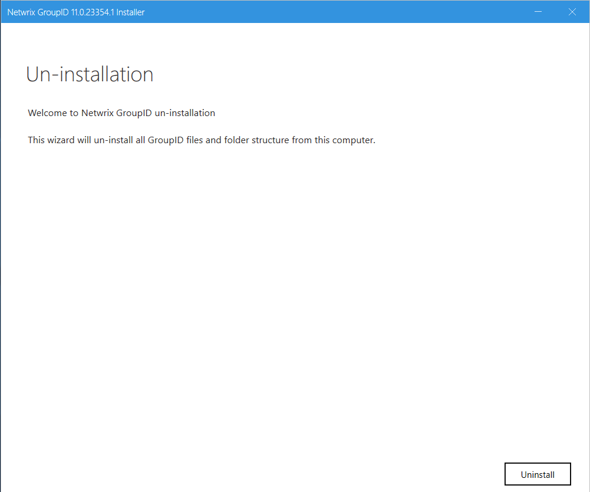
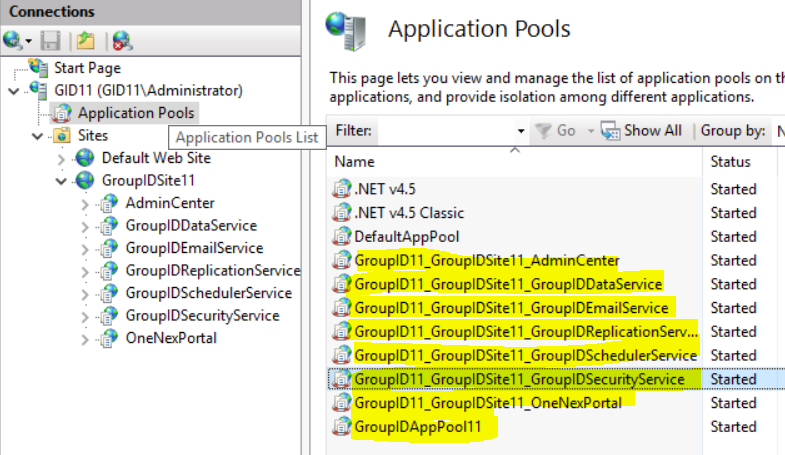

Overview
This article explains how to uninstall previous versions of Netwrix Directory Manager (formerly GroupID) to upgrade to the latest version. It also provides instructions for completely removing Directory Manager from your machine.
Instructions
The steps below guide you through uninstalling Directory Manager for an upgrade and completely removing it from your machine.
NOTE: Before you uninstall Directory Manager, ensure that the logged-in user is a member of the local Administrators group on the machine. Make sure the Directory Manager portal is fully closed before you begin the uninstall process.
Uninstall Directory Manager to Upgrade to a Newer Version
- Double-click the setup.exe file in the Directory Manager installation package to launch the Directory Manager Installer.

- Click Uninstall Directory Manager to remove the application files via Programs & Features in Control Panel.
- Proceed with the upgrade to the newer version of Directory Manager.
- Click the Install Directory Manager link on the Directory Manager Installer to install the latest version.
- After installation, run the Upgrade wizard to make earlier version data compatible with the new version.
Completely Uninstall Directory Manager from the Machine
- Click Uninstall Directory Manager on the Directory Manager Installer to uninstall the application files from your computer.
-
Remove the following components to ensure complete uninstallation:
- Directory Manager installation directory
- Other relevant directories
- Directory Manager DLLs
- Registry keys
- Services files
- Directory Manager application pool
- Directory Manager certificates
Remove the Directory Manager Installation Directory
-
On the Directory Manager machine, navigate to
X:\Program Files\Imanami(where X represents the installation drive). - Delete the directory named Directory Manager [version] (for example, Directory Manager 11).
Remove Other Relevant Directories
- On the Directory Manager machine, right-click the Windows button and select Run.
-
When the dialog box populates, type
%ALLUSERSPROFILE%\Imanamiand enter. - From the location referenced in the command, delete the Directory Manager folder.
Remove Directory Manager DLLs
-
On the Directory Manager machine, navigate to
C:\Windows. -
Search for all DLL files with names starting with Netwrix. You can find
the files by typing
Netwrix*.dllin the Windows Explorer Search box. - Delete these files.
Remove Registry Keys
- On the Directory Manager machine, open Registry Editor.
- Delete the following registry key (for Directory Manager 11):
HKEY_LOCAL_MACHINE\SOFTWARE\Imanami\GroupID\Version 11.0
Remove Directory Manager Services Files
-
On the Directory Manager machine, navigate to
C:\Windows\Microsoft.NET\Framework64\v4.0.30319\Temporary ASP.NET Files. - Delete the root folder.
Remove Portal Files
-
Open the Internet Information Services (IIS) console by typing
inetmgrin the Windows Run dialog box. - Under the GroupIDSite node in the console tree, locate the portals you have created using the portal names.
- Delete each portal by right-clicking it and selecting Remove from the shortcut menu.
-
After removing the portals, navigate to
C:\Windows\Microsoft.NET\Framework64\v4.0.30319\Temporary ASP.NET Files. - Delete each portal folder one by one.
Remove the Directory Manager Application Pool
-
Open the Internet Information Services (IIS) console by typing
inetmgrin the Windows Run dialog box. - Expand the <machine name> node in the console tree and click Application Pools.
- On the Application Pools page, delete Directory Manager App Pool 11 and all other pools that start with GroupID11_GroupIDSite11 prefixes.

Remove Directory Manager Certificates
-
Open the Internet Information Services (IIS) console by typing
inetmgrin the Windows Run dialog box. - Click the <machine name> node in the console tree. On the Features View tab, select Server Certificates in the IIS section.
-
Delete these certificates bound to GroupIDSite (the site deploying
Directory Manager Data Service):
- GroupIDSecurityService
- Netwrix Directory Manager Certificate
NOTE: Do not remove these certificates if another Directory Manager version is installed on the machine.